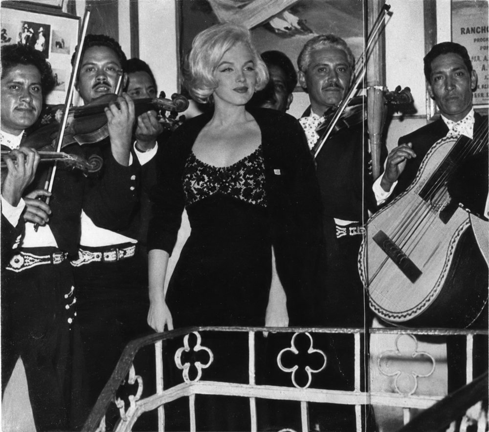
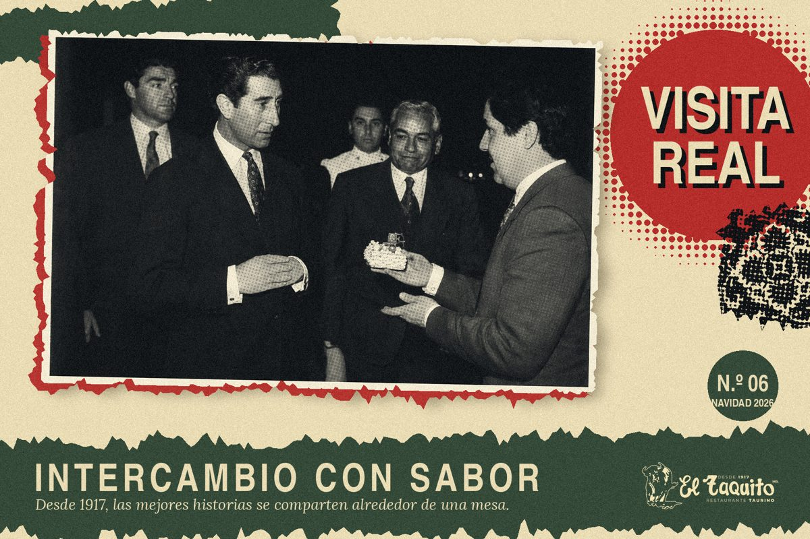
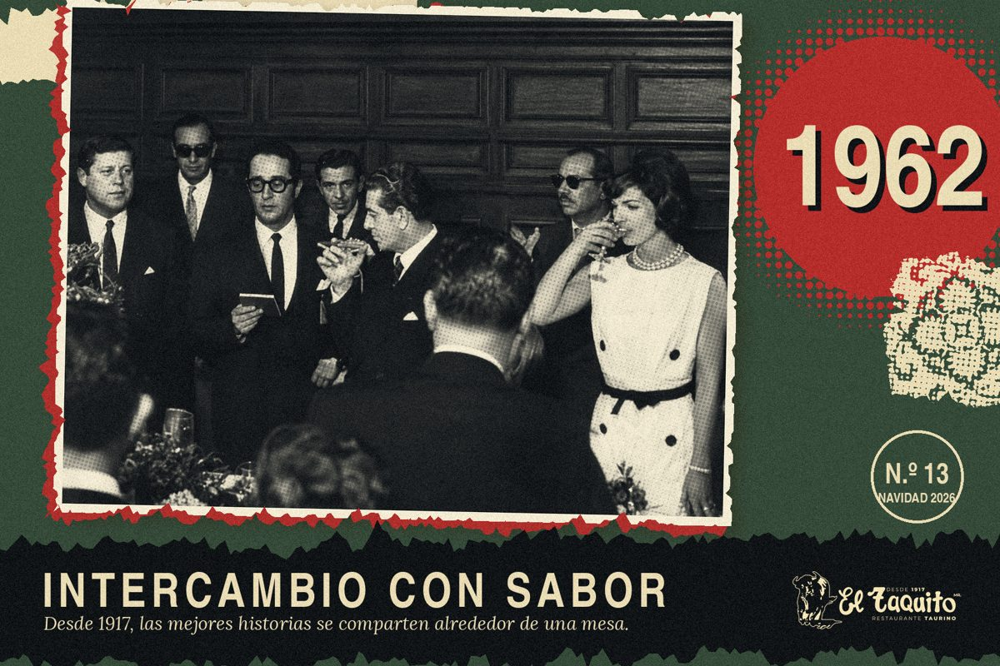
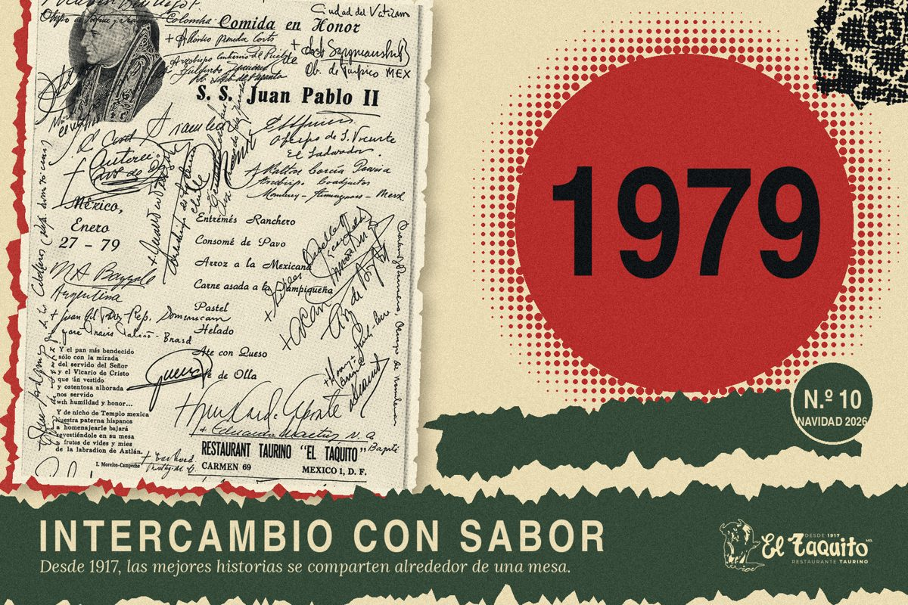
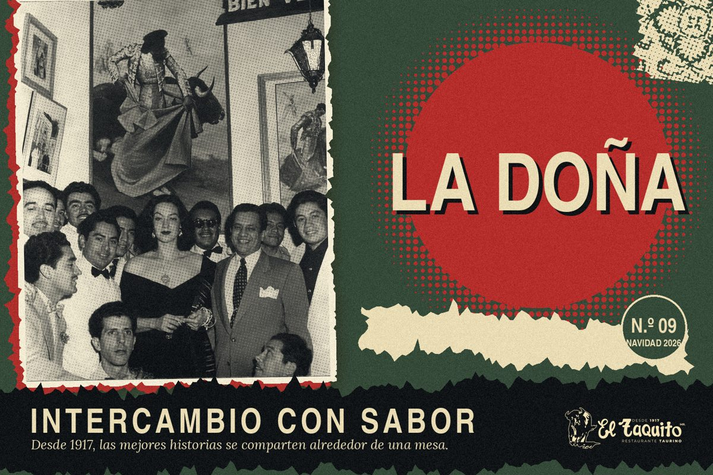
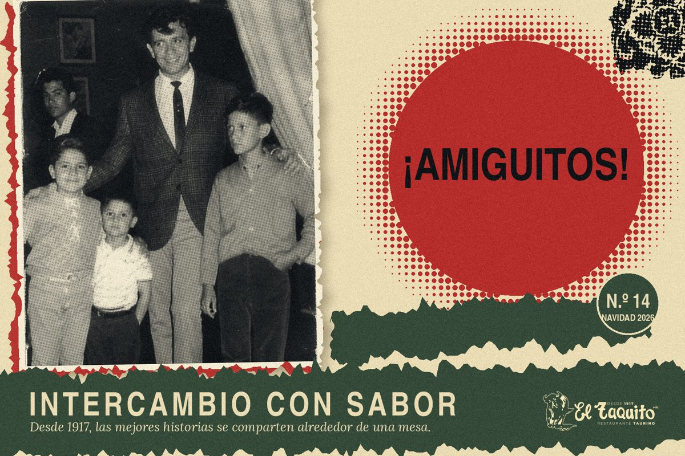
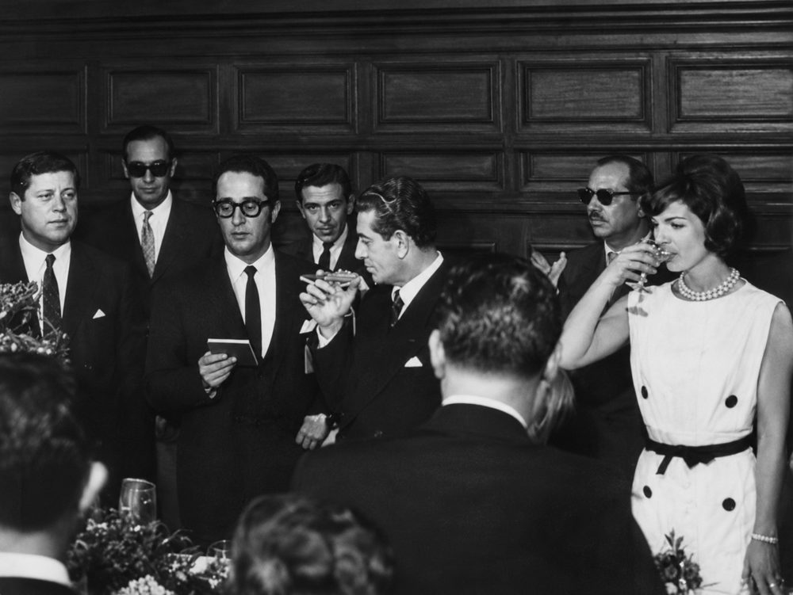
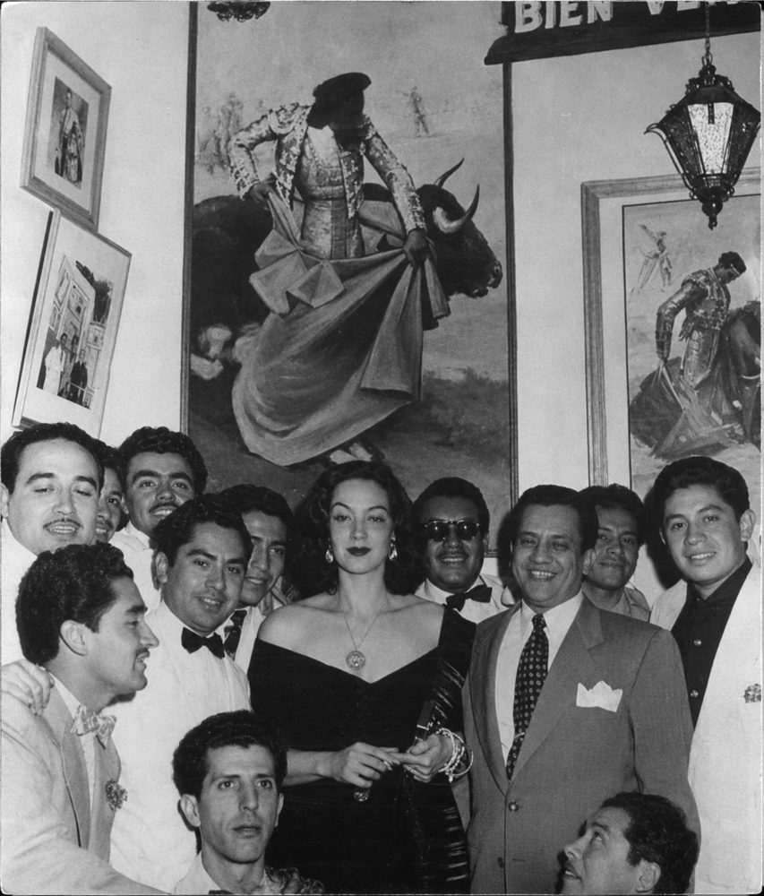
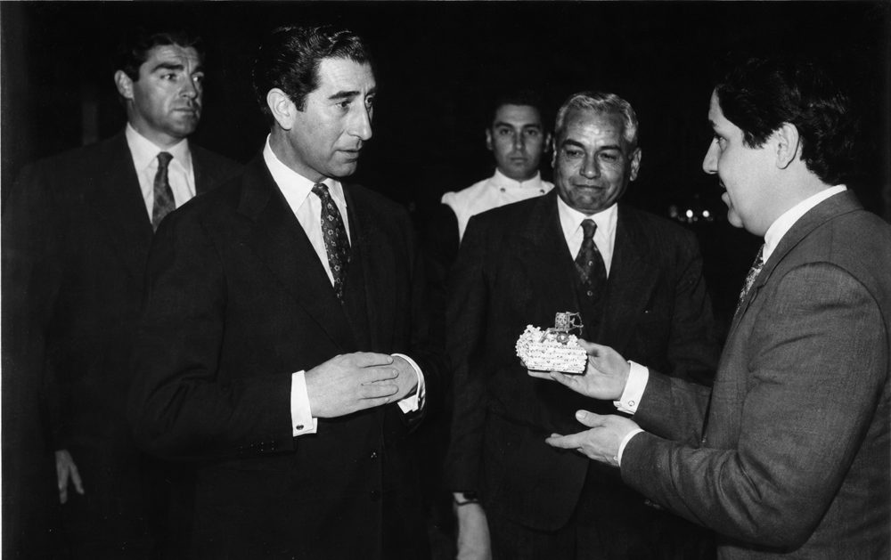

Mole de Doña Conchita
La receta de la bisabuela, con más de 20 ingredientes y un mole madre que se sigue cocinando en casa.
Miguel Noreña 25 · San José Insurgentes
La misma familia sirve las recetas de Doña Conchita desde hace 109 años. Ahora en San José Insurgentes, a unos minutos de tu oficina y de tu casa.

Diciembre · Intercambio con Sabor
Del 1 de diciembre al 28 de febrero repartimos 15 postales con fotos reales de nuestro archivo. Cada una abre su historia con un QR. Crea la tuya con tu foto, regálala y descubre la sorpresa que te preparamos.
«Desde 1917, las mejores historias se comparten alrededor de una mesa».





La cocina
Somos cocina mexicana tradicional, no una taquería. Más de diez platillos de nuestra carta ya estaban en la de 1953, y la cocina la lleva hoy Carla Guillén, cuarta generación de la familia.
La receta de la bisabuela, con más de 20 ingredientes y un mole madre que se sigue cocinando en casa.
En nuestra carta desde 1953. Pica un poco, por el chipotle, y por eso se pide otra vez.
De un mes de nacido y marinado 24 horas: suave por dentro y crujiente por fuera.
Salsa de pulque y pasilla que no pica, y lengua envuelta en hoja de plátano.
La receta heredada, con rompope. Para la sobremesa, con un café de olla.
Sábado y domingo, barbacoa de carnero y pancita para la comida en familia.
Lunes a jueves · 13:00 a 16:00
Menú ejecutivo$159
Sopa, arroz o pasta, plato fuerte, postre sencillo y agua del día. Cuatro tiempos de cocina de casa, a unos pasos de tu oficina.
Pregunta el menú de hoyMúsica en vivo de 17:00 a 22:00 para cerrar la semana con tu equipo.
Deja el auto en la puerta por $70 y olvídate de buscar lugar.
Mesa sin espera para la comida de negocios o para tu equipo completo.
Nuestra historia
Doña Conchita y Don Marcos Guillén venden antojitos en la calle del Carmen, en el Centro.
El negocio crece y se vuelve restaurante con mesas.
Marilyn Monroe come en El Taquito, y ese mismo año servimos el banquete para los Kennedy en Chapultepec.
Cocinamos una comida para 2 mil personas en la primera visita de Juan Pablo II.
Servimos la cena de gala del príncipe Carlos, hoy rey Carlos III.
Dejamos Carmen 69 y abrimos en Miguel Noreña 25, con la misma familia y las mismas recetas.



Fotos del archivo de la familia Guillén. La historia completa está en el libro El Taquito, una historia que contar.
Navidad y eventos
Pavo, pierna y lomo sobre pedido, con 8 días de anticipación. Pide antes del 16 de diciembre para Nochebuena y antes del 23 para Año Nuevo. Todo diciembre hay romeritos, bacalao y ponche en el restaurante.
Pide el menú de NavidadLa planta alta recibe hasta 70 personas para tu posada, comida de fin de año o celebración: taquizas, parrilladas, menús formales y barra libre. También llevamos el banquete a tu casa u oficina.
Cotiza tu evento«Conserva el buen sabor del antiguo lugar».Reseña en Google
Han contado nuestra historia
Visítanos